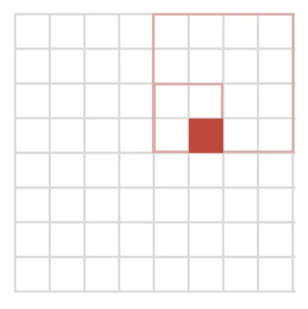

Geospatial Indexing
There's a ton of data on any Maps application, where and how is it all stored?
Keeping aside the Apple / Google maps debate, this question sent me down a rabbit hole of where and how geospatial entities are stored.
Motivation
In any maps-based application (Maps, Uber etc.), we might want to query things like Nearest Neighbors (e.g. where's my closest friend?), or Range queries (e.g. how many ATMs exist within 2 miles of me?).
There's no easy way to build such relationships between geospatial entities in a traditional database.
To illustrate this point, consider a traditional SQL database. Our SQL db might index entries using keys, but that doesn't inherently allow us to query relevant information. Hence the need for a better way to capture the relationships between geospatial entities.
Geospatial Data
Geospatial data is fundamentally 2D or "2.5D" where we consider height to be a property of a 2D point, like elevation. There are only a handful of use cases where 3D representations are necessary: underground geology, atmospheric mapping, cave navigation, urban environments (bridges crossing over each other) etc, but for typical use cases this would simply be overkill.
Let's dig a little deeper into the introduction to this section. What does it mean for our spatial data to be fundamentally 2/2.5D?
Consider a mountain. In pure 3D space, a mountain would be a volume. But in most geospatial applications, we represent it as a surface with elevation values – essentially a 2.5D representation. This is because:
- Most of our measurements are taken from above (satellite imagery, aerial photography).
- Most human activities happen on or near the surface.
- We rarely need to know what's happening at every point inside the mountain.
Even when we do care about what's below the surface, we tend to work with layers or slices rather than true 3D volumes. This structure of layering / using slices is also partly due to how we gather data – drilling core samples gives us information at specific points, which we then interpolate into layers.
Geospatial Queries
The nature of geospatial queries is more intuitive. Most of our practical queries are essentially in 2D. For instance, queries like:
- "What's the nearest restaurant?"
- "What's the shortest route between these points?"
- "What's the area of this property?"
naturally map to 2D.
Practical Considerations
Using 2D representations are also computationally more efficient. Most displays are 2D (screens, paper maps), so we need 2D representations for visualization anyway.
Implementation
GIS and other mapping software use techniques like Sinusoidal projections to map the Earth onto a 2D surface. With Sinusoidal projections in particular, a (lat, long) coordinate is converted to a 2D point using the following formulas:
where ϕ is the latitude in radians, λ is longitude in radians, and λ_0 is the longitude of the central meridian, in radians. These projections can then be scaled to fit the application being built.
Indexing and querying geographical entities
Quadtrees
Structure
Quadtrees are adapted tree structures. A quadtree begins with a root node representing the entire spatial area. As points are added, the space is recursively subdivided into four equal quadrants. Each node in the tree corresponds to a specific rectangular region of the space. There are two kinds of nodes:
Non-leaf nodes:
- Have exactly four children
- Represent four quadrants of a 2D space
- Don't store points directly
Leaf nodes:
- Store indexed points up to a maximum capacity
- Once capacity is exceeded, the node splits into four children
- If the list exceeds some predetermined maximum number of elements, split the node, and move the points into subnodes based upon where they lie in the 2D space.
- The maximum capacity is a configurable parameter that affects tree performance
Querying
- Start at the root node
- For each child node:
- if (node intersects with the query area): recursively search that node
- if (leaf node): examine all points within for matches
- Return all matching points found
An emergent property of quadtrees is that they function as a trie structure, since the values of tree nodes do not depend on the data being inserted. In other words, node positions are determined by spatial subdivision rather than inserted data. This enables an elegant node numbering system:
Each quadrant receives a binary number:
- Top-left: 00
- Top-right: 10
- Bottom-left: 01
- Bottom-right: 11
A node's full identifier is created by concatenating its ancestors' quadrant numbers from root to leaf

For instance, the node represented by the bottom right circle in this image can be coded as 11 01.
Source: This very cool blog.
Connection to Geohashes
If we fix the depth of a quadtree, you can calculate a point's node number directly. For instance, consider an 8x8 grid. We need a quadtree of depth 3 to map such a grid (4^3 = 64). Take the point (x=5, y=3) and consider the following approach:
Convert them to binary: x = 101, y = 011
Interleave bits from both coordinates. This gives us [10][01][11]
Each bit pair identifies a quadrant in the tree.
If we map this out, we see that the code [10][01][11] leads us exactly to (5, 3) on the chessboard. This allows us to avoid the overhead of storing the tree and calculate a point's node number directly. This approach forms the basic idea behind geohashes.
Geohashes
A geohash is a hierarchical spatial data structure which subdivides space into buckets of grid shape.1 A typical geohash could look something like: 9q8yy. This particular one falls over my favorite coffee shop in San Francisco.
Creation of Geohashes
A geohash converts a 2D point (lat/long) into a single string, each extra character in the hash means more precision. To illustrate, let's try and convert (37.779°N, -122.39°W) into the geohash above.
Step 1: Convert to binary ranges
Longitude (-180 to 180): -122.39 is in: left half (0), left half of left (1), etc... → 00101...
Latitude (-90 to 90): 37.779 is in: top half (1), bottom half of top (0), etc... → 10110...
Step 2: Interleave bits (longitude first)
lon: 0 0 1 0 1 ...
lat: 1 0 1 1 0 ...
mix: 01 00 11 01 10 ...Step 3: Group bits into 5-bit chunks
01001 10110 … (Note: we will default to a 32-bit hash. Higher bit hashes will have higher precision.)
Step 4: Convert each 5-bit chunk to base-32
01001 → '9'; 10110 → 'q' ... → "9q…"
Note: The geohash alphabet doesn't allow the characters 'A', 'I', "L', 'O', so it is slightly different than straight encoding into base-32.
For exact latitude and longitude translations, Geohash is a spatial index of base 4, because it transforms the continuous latitude and longitude space into increasingly smaller quadrants. To be a compact code it uses base-32 and represents its values by the following alphabet, that is the "standard textual representation".
Querying
Given a query area, we first find the smallest prefix that completely covers the query area. In the worst case, this may be substantially larger than the actual query area – for example, a small shape in the center of the indexed area that intersects all four quadrants would require selecting the root node for this step.
Let's work through an illustrative example: When you're looking at San Francisco on Google Maps, you're really looking at a bounding box – let's say roughly: Northwest: 37.81° N, 122.52° W; Southeast: 37.70° N, 122.35° W

But if you want to cover all of San Francisco using geohashes, you need to:
- Find geohashes for all four corners
- Look for their common prefix
- Then generate all the geohashes at your desired precision that fall within that box
which might look more like this. Notice that the common prefix area might be a lot larger than the area you care about.
Optimizing queries
We're now faced with a challenge: Balancing Precision and Query Efficiency.
- You want to cover your query region (like a circle, polygon, etc.) with geohash prefixes
- You want to minimize the areas outside your actual query region, BUT you can't just use tiny precise geohashes because that would mean too many database queries
A solution to this might take the following shape: (more details in this blog)
Step 1: Initialize with a Broad Prefix
Start with the smallest geohash prefix that covers the bounding box (e.g., "9q8" for San Francisco).
Step 2: Refine Iteratively
For each iteration:
- Evaluate the geohashes in your current set.
- Identify the geohash that covers the most "unwanted" area (i.e., outside your region).
- Subdivide that geohash into smaller geohashes.
Step 3: Check Query Limit
After subdividing, ensure that the total number of geohashes remains below the maximum query limit.
If subdividing creates adjacent geohashes that can be combined, merge them to reduce the total count.
Geohashes can be further optimized using Hilbert Curves. I highly recommend checking out the blog above as a starting point if you're so inclined, but I'll cut this off here.
R-trees
R-trees, as the name might suggest, are also adapted trees. The key idea of the R-trees is to group nearby objects and represent them with their minimum bounding rectangle in their parent node. Since all objects lie within this bounding rectangle, a query that does not intersect the bounding rectangle also cannot intersect any of the contained objects.
R-trees are a complex data structure in themselves, so instead of focusing on their technical details I will focus on higher level differentiation.2
Why R-trees as opposed to Quadtrees?
R-trees allow more flexibility by automatically adjusting the areas. Quadtrees are also rigid (always 4 quadrants) but R-trees are a lot more dynamic to where data actually is.
Imagine Manhattan, for instance. In Midtown, you might have hundreds of restaurants, shops, and landmarks packed into a few blocks but in residential areas, you might have very sparse Points of interest. Then, an R-tree would automatically adjust its rectangles to be smaller in Midtown (to handle the density) and larger in sparse areas.
Most spatial data clusters naturally (like businesses along streets), R-trees can shape their rectangles to match these natural clusters.
R-trees enforce minimum/maximum nodes per rectangle, ensuring the tree stays balanced. Quadtrees can get very deep in dense areas, slowing down searches.
Miscellaneous facts / details
Latitude/Longitude decimal places roughly correspond to:
- 0 decimal places (137°): ~111 km precision
- 1 decimal (137.9°): ~11.1 km
- 2 decimals (137.99°): ~1.11 km
- 3 decimals (137.999°): ~111 m
- …
Interplay between geohashing systems and grids:
Given a point with 1 decimal place like (37.7°N, 122.4°W):
This effectively means the true point could be anywhere within:
- Latitude: 37.65° to 37.75° (±0.05°)
- Longitude: 122.35° to 122.45° (±0.05°)
Which creates a rectangular area of roughly 11km x 11km! Not circular!
Things I hope to cover eventually
That about does it for this blog post. If you made it all the way here, I appreciate you sticking through it. As a reward, I'm linking more reading on related topics that I wish to cover at some point.